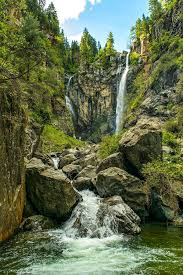

The name of this region is KPK .
Kumrat Valley, nestled in the Upper Dir District of Khyber Pakhtunkhwa, Pakistan, is more than just a tourist spot; it's an experience. For me, it is a place where time slows down, and the overwhelming beauty of nature washes away the stresses of city life. The journey itself is an adventure, a transition from the noise of civilization into a profound silence broken only by the swirling waters of the Panjkora River.
The valley is defined by its dense forests of pine and deodar, often shrouded in a light mist that gives it an almost ethereal, fairy-tale quality. One of the most captivating features is the Panjkora River, which cuts right through the heart of Kumrat. The river is turquoise, cold, and immensely powerful, providing a constant, soothing background melody. Standing on its banks, you feel connected to something ancient and pure. The sound is a constant reminder of the valley's untamed heart.
The local climate ensures the valley remains lush and vibrant, especially during the summer months. However, the true magic unfolds in the late spring when the wildflowers bloom, creating a vibrant tapestry across the meadows.It's a photographer's dream, with every angle offering a new, breathtaking vista.
The lush green carpet of the valley floor, framed by the towering mountains, changes color dramatically with the seasons. It's this dynamic environment that makes every visit unique. Even the air here feels different—crisp, clean, and carrying the scent of pine and fresh earth.
While the natural beauty is the main draw, the warmth of the local people adds an unforgettable layer to the Kumrat experience. The villagers are known for their hospitality and simple, hard-working lives. They maintain a close connection to the land, respecting its power and bounty. Their traditional wooden houses, often clustered along the river, are a charming sight. Interacting with them, even briefly, offers a genuine glimpse into the culture of the region.

Beyond the main valley floor, there are several remarkable spots to explore:
A short, picturesque trek leads you to the famous Kumrat Waterfall. It's not the largest waterfall in the region, but its secluded location and the icy-cold pool at its base make it a rewarding destination. The moss-covered rocks and the damp, cool air around it are incredibly refreshing.
The Thal area is often considered the gateway to Kumrat. It's famous for its unique wooden mosque and serves as a central hub. From here, one can venture deeper into the 'jungle'—the dense forest areas that truly define the valley. These forests are perfect for quiet walks and offer incredible opportunities for spotting local wildlife, though you must always be cautious and respect the environment.
Kumrat is known for its deodar forests, which means a 'timber of the gods.'

For those seeking a strenuous but deeply rewarding adventure, the trek to Jahaz Banda and Katora Lake is a must. While a bit outside the main Kumrat area, they are often visited as part of the Kumrat trip. Jahaz Banda is a vast, high-altitude meadow, and Katora Lake is a stunning, bowl-shaped glacial lake, an absolute highlight of the region. The view from up there makes the entire effort worthwhile.


Another popular spot is Kala Chashma (Black Spring), known for its incredibly clear and pure spring water. It's a testament to the pristine environment of the valley, and many locals believe the water has healing properties.

Kumrat offers a perfect blend of challenging adventure and peaceful relaxation. Here’s how to best experience the valley:

 ---
---
Want to share your favorite travel spot?Follow Below Links